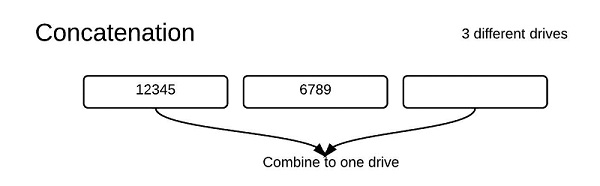

Table of Contents
- Introduction
- RPC Performance Issues
- Network File Systems
- Process Structure in Linux
- NFS Synchronization
- Media Faults
- Disk Drive Failure Rates
Introduction
In the last half of the last lecure we learned the basics about distributed systems and RPC and some common problems when using them. RPC stands for remote procedure calls and in this lecture we cover details on the speedups of RPC, network file systems, and solutions to media faults.
RPC Performance Issues
Possible Speedups
- Having the client and server closer together.
- Pipelining: where multiple requests are sent at the same time before client gets a response back from the server.
- Caching so that retrieving data will be quicker.
- Prefetching pages so that common pages that the users browses through are loaded quickly. This is sometimes combined with caching.
Pipelining Problems
- Server may overload from too many client requests.
- Different client requests may have dependencies between each other.
- Requests should all be itempotent or should not change anything on the page.
Client Caching Problems
- Stale Cache
- Solutions: Expiration date on answers, quick ways of verifying that you're up to date.
- Push Protocal
- Server notifies all clients that are interested.
- Client must be always be on and working to see the notification.
- Clients will have to do more work.
Network File Systems
$cd /net/foo/bar/biz
$cat file
Network file systems determine the way that files are stored across a network and how different clients can access certain files. The two commands above change the directory into a file on the machine foo and then grab a copy of the file /bar/biz/file with cat.
From OS point of view
- Mount table
For Example:
In this 5 file system mount table and diagram, each (dev, ino) pair uniquely identifies each file. Each file can be mounted on another file system and all file systems are mounted onto root.
- LOFS(loop back file system)
- Do not use loopback file systems as they generally come with an abundance of errors.
- There may be many loop problems that you have to take care of.
- One security addition is to only allow root to be able to mount and not clients.
Process Structure in Linux
This is a diagram of the NFS client code inside the kernel as a file system implementation.
NFS Protocol
MKDIR(dirfh, name, attr) //Parameters: parent,name of dir, permissions/ownership
REMOVE(dirfh, name) -> status
LOOKUP(dirfh, name) -> fh + attrs
READ(fh, offset, size) -> data
These are some functions of the RPC protocol of the NFS, which is very similar to unix syscalls. Unlike system calls which use file descriptors, NFS does not. NFS uses file handles to uniquely identify different files. Close is a system call that is not included in the NFS protocol. We don't need to include it because NFS doesn't use file descriptors and only needs file handlers. There is a change that close(fd) can return -1 with errno = EIO. It is impossible to tell which write or read call failed from the multiple requests sent, but it is good to check this return value just to make sure the program works correctly.
Traditional Unix
- Have files with link counts of 0.
- Files are retained by kernel until they're closed.
- Uses file descriptors which the kernel stores and the applications use
Network File System
- We want NFS to survive file server crashes. We also want clients to operate without noticing server crashes.
- File handle: inode numbers and the device number on a server. Client doesn't know the details and only server sees the dev and inode and knows the file.
- NFS servers are always stateless.
- NFS can't use Unix feature of seeing which particular file is open and when it is open.
- They substitute for this by:
- If the link count would drop to zero on client, but files are open rename the file to NFSQFILES2. Unlink the file later on.
- If the client crashes during this process the link will stay there.
- If you use the command ls -al the file will still be shown, which is a worthwhile tradeoff to have.
NFS Synchronization
//First two lines run in parallel with last two
c1: t = get tod(); //Get today's date
write(fd, t, size of (t);
//These lines run in parallel with first two
c2: t = get tod();
read(fd, t1, sizeof(t));
//First two lines run in parallel with last two
c1: t = get tod(); //Get today's date
write(fd, t, size of (t);
//These lines run in parallel with first two
c2: t = get tod();
read(fd, t1, sizeof(t));
Will the second client see the first file or the new one? We need to address synchronization issues when using the NFS.
Problem
Synchronization in NFS is even more prevalent due to the number of clients that my be sending out requests to the server. In many cases the client may not see a consistent state even from a single chart. Writes executed on the server may also be in a different order than the client specified. NFS does not have read to write and write to read consistency, so these functions can be reordered by the server in any order.
Media Faults
Definition
Disk blocks can go bad when read or write reports an error. Need some type of tool to fix this.
Solutions
Can use write-ahead logging and write-behind logging to solve this problem. Keep logs of the reads and writes so that if a media fault exists there is a way to recover the lost data. The key point is using two logs not just logging itself. Always have a copy of the data.
Mirroring
Make multiple copies of each block when mirroring the data. When writing write 2 different copies and when reading read 1 copy. If the write fails replace the bad disk copy data from the good replacement disk.
RAID
RAID stands for redundant arrays of independent disks. It is a type of storage technology that combines multiple disk drive components into one unit. Using specific RAID levels may prevent certain disk errors from occuring such as media faults.
Raid 0:
Raid 0 eliminates redundancy for any of the files, so files are only stored once on all of the disks. This is bad in some cases as if a disk fault occurs there is no way to recover, but overall the performance is a lot better. There are two different ways the data is stored concatenation or striping. Striping is faster than concatenation as multiple drives can be run concurrently.
Raid 4:
RAID 4 implements a file system that includes a parity drive to restore disks when a disk fails. Whenever there is a read error it uses XOR operations to get the file that had a fault. Always write to parity disk when any disk is updated.
Write: write to B and read from parity disk. Then write new parity disk.
Read: read from parity disk. If there is a read error then use XOR. A^B^D^(A^B^C^D) gets the file C.
- This assumes at most 1 disk failure at a time.
- Performance will suffer after each failure because of having to retrieve files from parity disk.
- Parity disk can also be a bottleneck of the entire program.